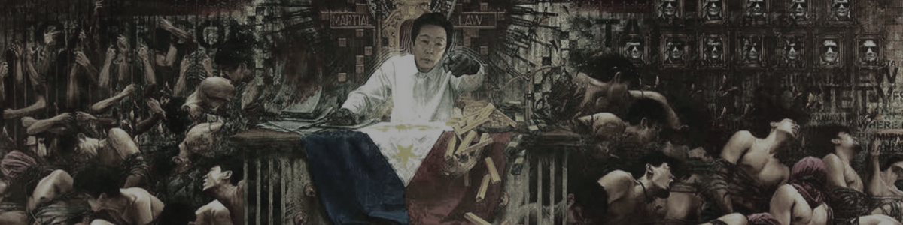
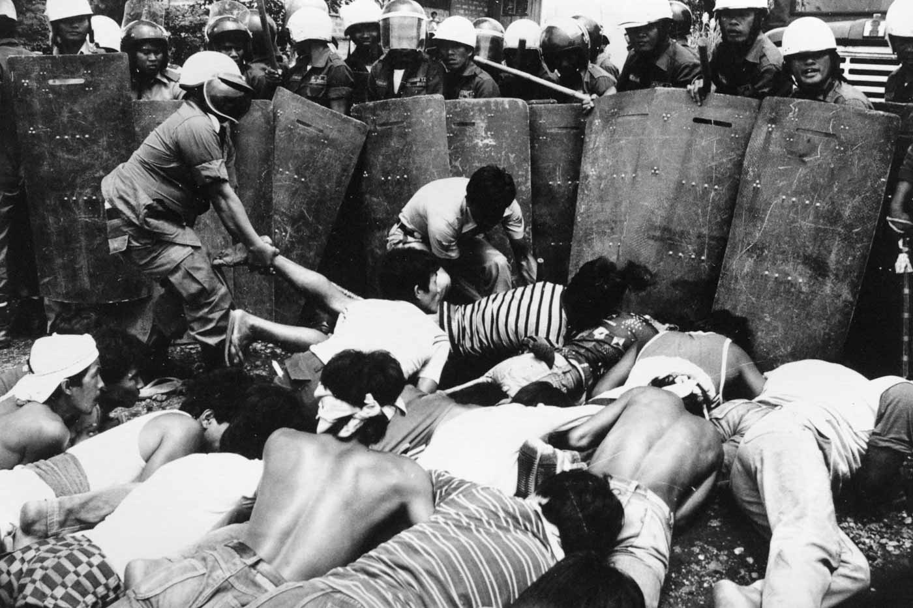
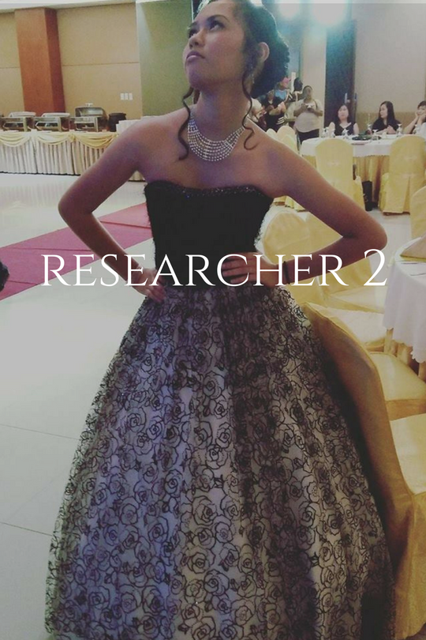

❮
❯
Ferdinand Edralin Marcos was conceived on September 11, 1917, in Sarrat, a town in the Ilocos Norte, Philippines. His parents, Josefa Edralin and Mariano Marcos, were both educators from vital families. Mariano Marcos turned into a congressman in 1925, encompassing the youthful Ferdinand in a political air at an early age. Mariano likewise impacted what was to end up noticeably Ferdinand's aggressive, win-no-matter-what nature. Mariano and Josefa pushed Ferdinand to exceed expectations at everything, his learns at school, as well as at exercises, for example, wrestling, boxing, chasing, basic instincts, and marksmanship. In school, Marcos' primary intrigue was the .22-caliber college pistol team.
At the point when Ferdinand Marcos was providing legal counsel, it was additionally when World War II started. He soon joined the Filipino Army, and battled as a battle knowledge officer against the Japanese. He supposedly even survived the Bataan Death March, seven days in length trek that killed around 25% of the USAFFE (United States Armed Forces in the Far East) POWs in Luzon.
ized his notoriety and riches, and additionally political abilities in picking up the most noteworthy government post in the country.That was May 01, 1954 at the Pro Cathedral of San Miguel in Manila when the marriage of Ferdinand Marcos and a previous lovely lady, Imelda Marcos, happened. They were first hitched in a common function in Baguio City yet later on chosen to have another wedding, which is a congregation wedding (religious marriage). Marcos won the heart of Imelda in a rankling 11 days regardless of their contrasting political perspectives. Marcos was a Liberal and an Ilocano while Imelda was a Nacionalista by family convention and a Waray-waray. The essential backer for their wedding was Marcos' old business, the previous president Ramon Magsaysay. There were around 3000 welcomed authorities of Manila and social elites for the breakfast gathering in the Malacañang Palace. The media celebrated with their wedding, publicizing it as the "Wedding of the Year." Marcos had his home in San Juan revamped after the marriage. Also, to offer as much time for his family, he included a wing for his law office.
Marcos required another decision for 1986 against Corazon Aquino, the spouse of Benigno. Marcos asserted a 1.6 million vote triumph, yet onlookers in the group found a 800,000 win by Aquino. After the People Power Revolution, Marcos and his family fled to Hawaii under insurance from the United States. The Marcoses had washed billions of dollars from the Philippines, and also in Switzerland. Imelda broadly left more than 2,500 sets of shoes in her storeroom when she fled Manila. They were later put on trial for debasement, theft, and join among others. Both were later cleared. Ferdinand Emmanuel Edralin Marcos, Sr. later passed on of different organ disappointment on September 28, 1989. He deserted a notoriety for being a standout amongst the most degenerate and merciless pioneers in present day Asia.
Ferdinand Edralin Marcos was conceived on September 11, 1917, in Sarrat, a town in the Ilocos Norte, Philippines. His parents, Josefa Edralin and Mariano Marcos, were both educators from vital families. Mariano Marcos turned into a congressman in 1925, encompassing the youthful Ferdinand in a political air at an early age. Mariano likewise impacted what was to end up noticeably Ferdinand's aggressive, win-no-matter-what nature. Mariano and Josefa pushed Ferdinand to exceed expectations at everything, his learns at school, as well as at exercises, for example, wrestling, boxing, chasing, basic instincts, and marksmanship. In school, Marcos' primary intrigue was the .22-caliber college pistol team.
At the point when Ferdinand Marcos was providing legal counsel, it was additionally when World War II started. He soon joined the Filipino Army, and battled as a battle knowledge officer against the Japanese. He supposedly even survived the Bataan Death March, seven days in length trek that killed around 25% of the USAFFE (United States Armed Forces in the Far East) POWs in Luzon.
Ferdinand Edralin Marcos was conceived on September 11, 1917, in Sarrat, a town in the Ilocos Norte, Philippines. His parents, Josefa Edralin and Mariano Marcos, were both educators from vital families. Mariano Marcos turned into a congressman in 1925, encompassing the youthful Ferdinand in a political air at an early age. Mariano likewise impacted what was to end up noticeably Ferdinand's aggressive, win-no-matter-what nature. Mariano and Josefa pushed Ferdinand to exceed expectations at everything, his learns at school, as well as at exercises, for example, wrestling, boxing, chasing, basic instincts, and marksmanship. In school, Marcos' primary intrigue was the .22-caliber college pistol team.
At the point when Ferdinand Marcos was providing legal counsel, it was additionally when World War II started. He soon joined the Filipino Army, and battled as a battle knowledge officer against the Japanese. He supposedly even survived the Bataan Death March, seven days in length trek that killed around 25% of the USAFFE (United States Armed Forces in the Far East) POWs in Luzon.